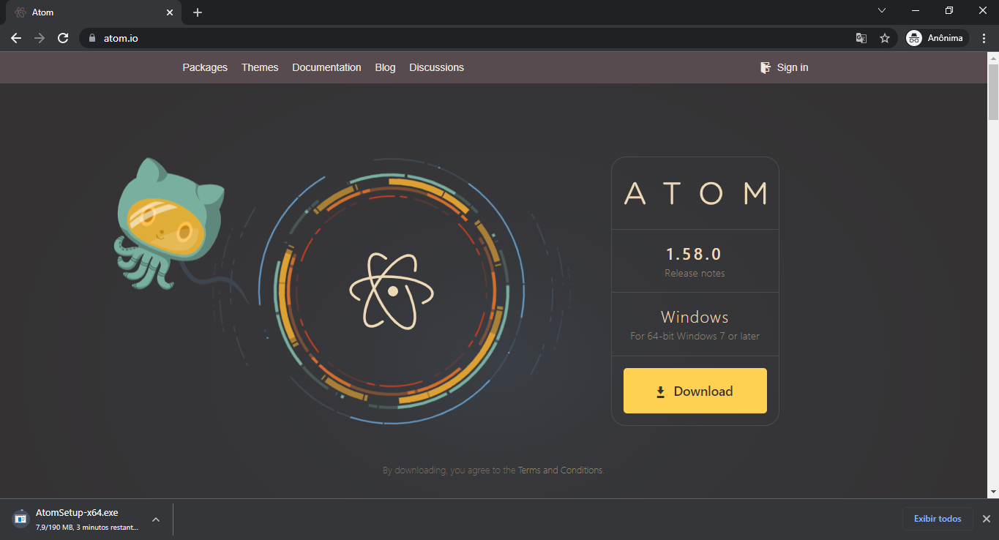

Robusto, dinâmico e poderoso. Este editor conta com diversos facilitadores que possibilitam um desenvolvimento e um workflow mais fluído. Recomendado para desenvolvedores inciantes e para aqueles que não gostam de decorar sintaxes.
Na barra de conteúdo, navegue pelas características do Atom.
Para baixar o Atom, vá até atom.io e clique em download.

A instalação do Atom é automática, basta executar seu instalador. O programa será iniciado ao término da instalação.
Por padrão o Atom não justifica o seu uso no desenvolvimento de aplicações para a OTMSuite, uma vez que é consideravelmente mais pesado do que o Notepad++. Para fazer sentido optar por este editor, foram desenvolvidos três pacotes personalizados com foco na experiência do usuário, especialmente na otimização de tempo de aprendizado e desenvolvimento. São eles: otmsuite-utils, language-mkq e language-mkp.
Para seu pleno funcionamento apenas um destes pacotes é de uso obrigatório, o otmsuite-utils, mas recomenda-se o uso dos três para uma experiência completa e facilitada.